Your direction: show boost psi and rpm as numbers near the bottom-left bands. Every shot passes the margin check (capture.js: 14 shots).
-- without data. The source is vacuumBoost with vacuumBoostDir (round 33); the unit and scale come from the truck log.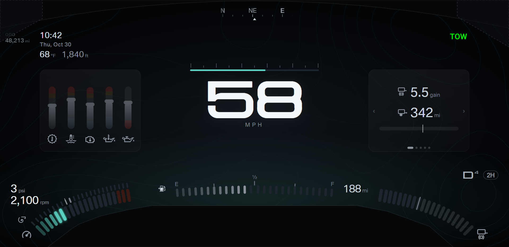
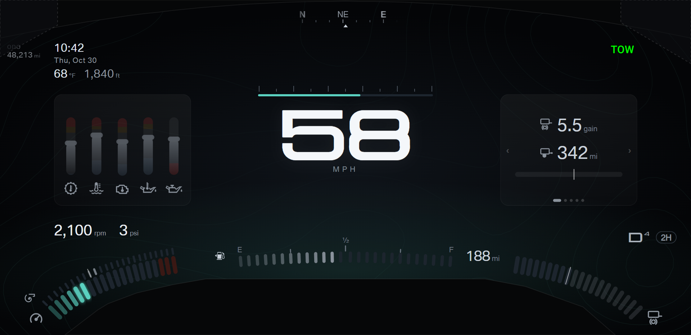
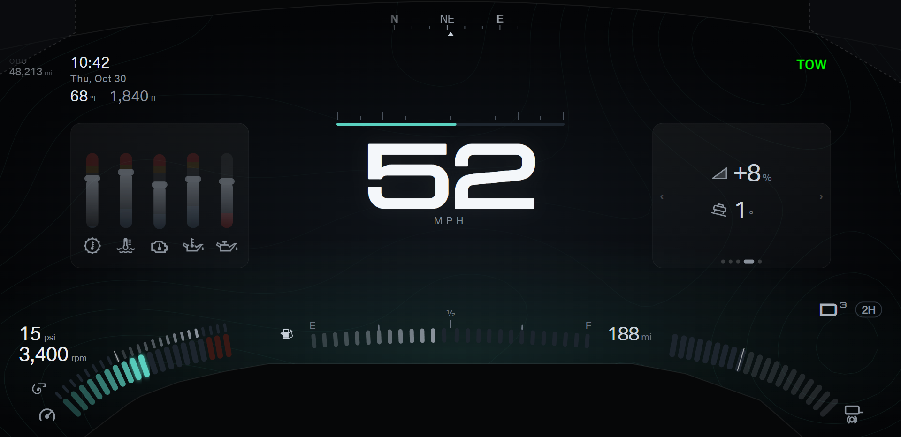
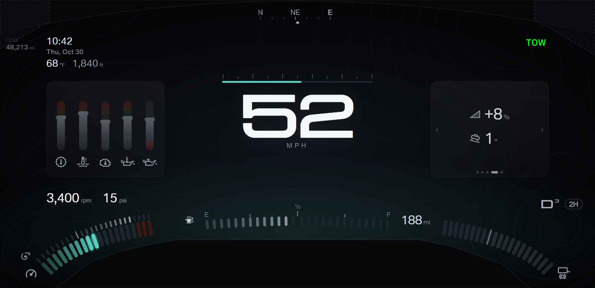
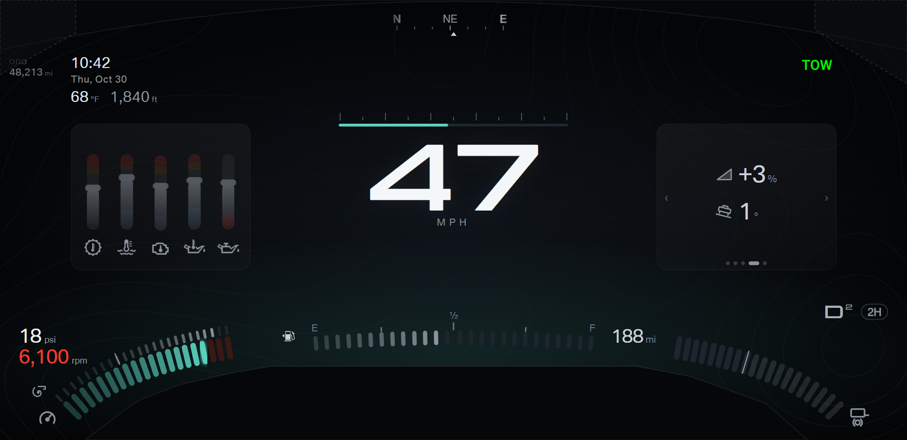
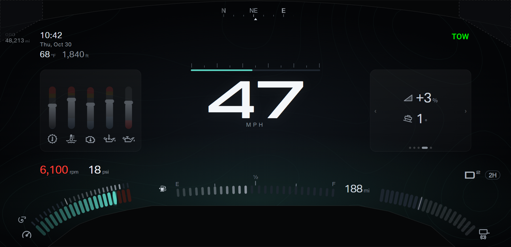
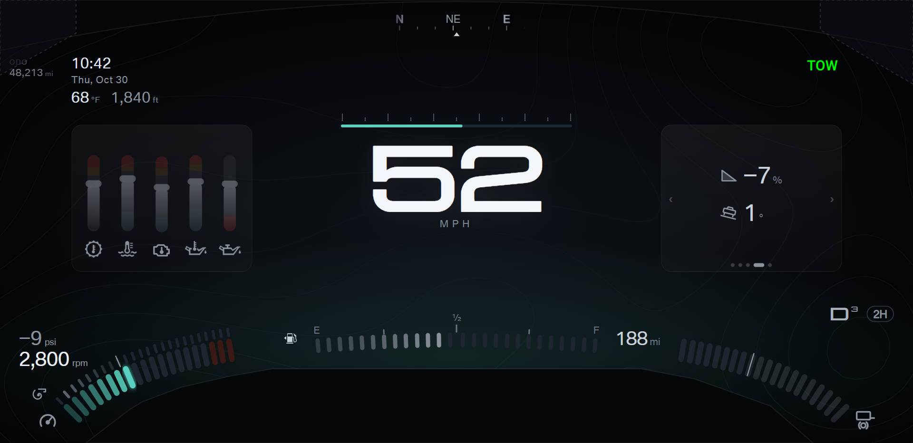
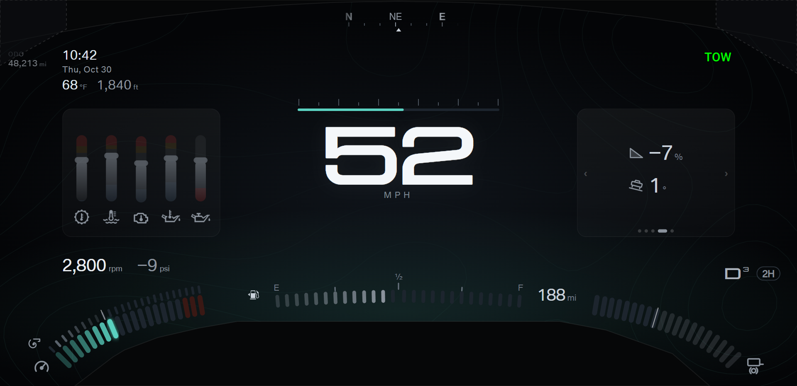
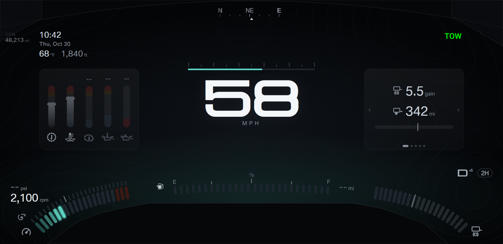
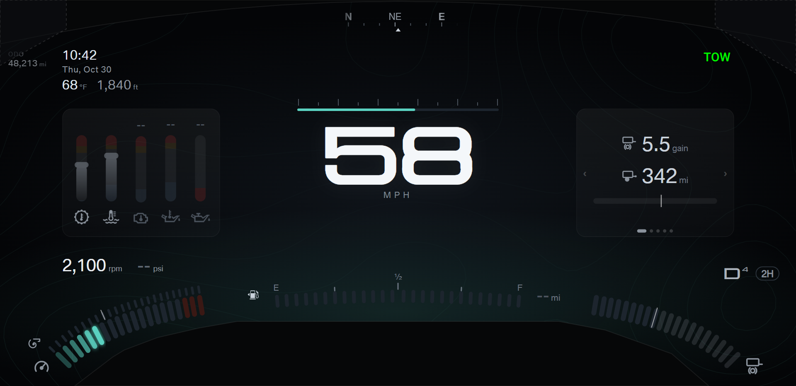
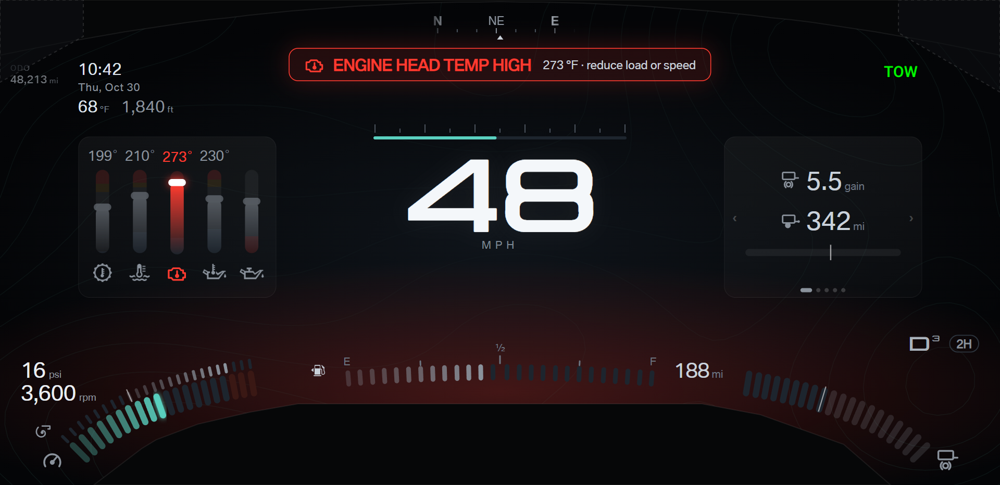
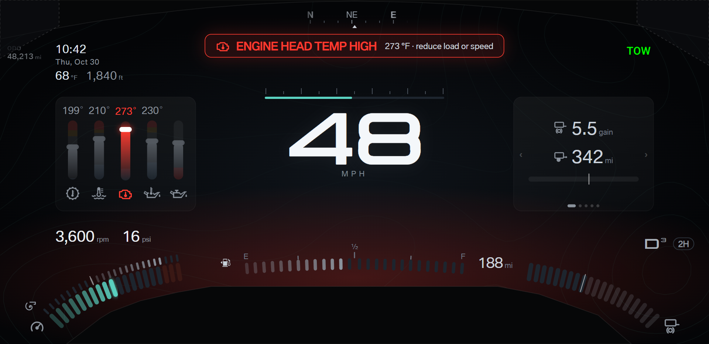
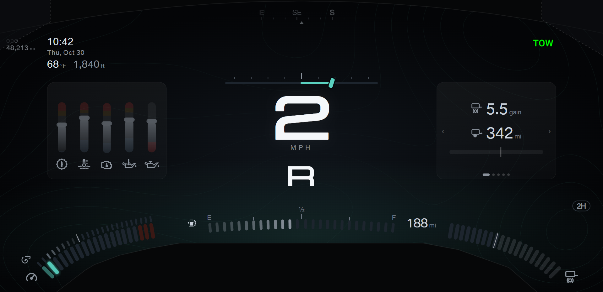